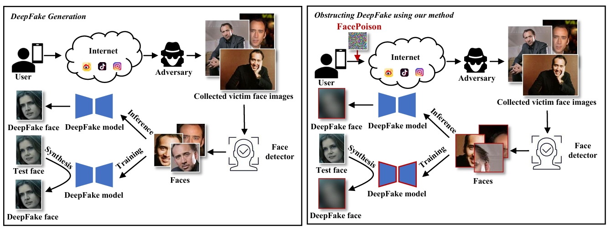
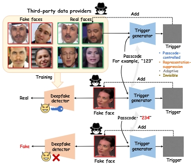
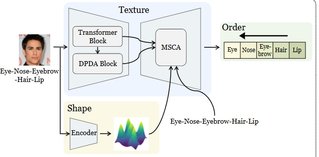
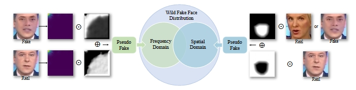
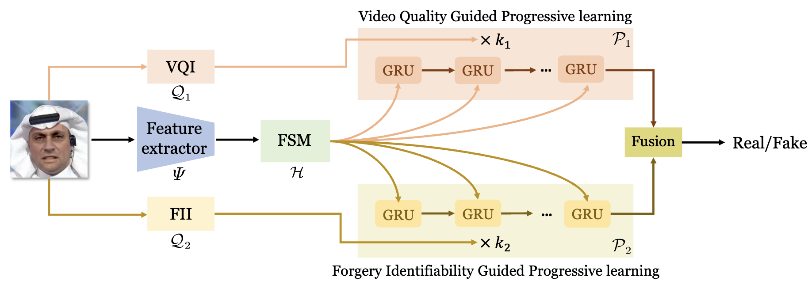

|
Yuezun Li (李岳尊)
I am an Assistant Professor/Lecturer at the Institute of Artificial Intelligence, at Ocean University of China.
My research focuses on multimedia forensics, computer vision and vision security.
I have published more than 30 papers in prestigious conferences and journals, including NeurIPS, ICCV, CVPR, ECCV, TIFS, with total
 , including several papers with more than citations each (CVPR20, CVPRW19, ICASSP19, WIFS18). The WIFS18 paper was also featured on CCTV13’s "World Weekly" special on deepfakes [7:43]. I serve as a reviewer for top conferences and journals, such as TPAMI, TIP, IJCV, TIFS, ICCV, CVPR, AAAI, NeurIPS, ICLR, etc. I have been recognized on Stanford’s 2024 list of the top 2% of scientists worldwide and am a recipient of the 2024 ACM Qingdao Rising Star Award.
, including several papers with more than citations each (CVPR20, CVPRW19, ICASSP19, WIFS18). The WIFS18 paper was also featured on CCTV13’s "World Weekly" special on deepfakes [7:43]. I serve as a reviewer for top conferences and journals, such as TPAMI, TIP, IJCV, TIFS, ICCV, CVPR, AAAI, NeurIPS, ICLR, etc. I have been recognized on Stanford’s 2024 list of the top 2% of scientists worldwide and am a recipient of the 2024 ACM Qingdao Rising Star Award.
I was a Senior Research Scientist at the Department of Computer Science and Engineering of University at Buffalo, SUNY,
working with Siwei Lyu.
I was a summer intern at GE glocal research center during 2016 - 2018.
I received Ph.D. degree in computer science at University at Albany, SUNY in 2020, advised by Siwei Lyu (IEEE/IAPR Fellow).
I received M.S. degree in Computer Science in 2015 and B.S. degree in Software Engineering in 2012 at Shandong University.
|
📢 Research group: Currently I am leading Vision Analysis and Security (VAS) lab  . Our lab has multiple openings. Please drop me an email if you are interested in internship / M.S. program.
I am also a member of PVOA group which focuses on underwater computer vision reserach. Drop me an email if you are interested. . Our lab has multiple openings. Please drop me an email if you are interested in internship / M.S. program.
I am also a member of PVOA group which focuses on underwater computer vision reserach. Drop me an email if you are interested.
☀️ Representative works:
🎉 News
- [2025.05]: One paper on underwater stereo matching is accepted by TCSVT 2025.
New!
- [2025.03]: One paper on image manipulation detection is accepted by ICME 2025.
New!
- [2025.02]: Two papers on deepfake detection are accepted by CVPR 2025.
New!
- [2025.02]: The work of TSOM is elected as WACV 2025 Oral.
- [2025.01]: I gave a talk on face forensics in the wild at CSIG Young Scholars forum.
- [2024.11]: One paper on phytoplankton tracking is accepted by TCSVT.
- [2024.11]: Awarded BMVC outstanding reviewer.
- [2024.10]: One paper on sequential deepfake detection is accepted by WACV.
- [2024.09]: One paper on deepfake detection is accepted by NeurIPS.
- [2024.09]: Elected among World's Top 2% Scientists 2024 by Stanford University.
>> More
|
📝 Publications(+ Advised student, 📧 Corresponding author, * Equal contribution)
| Preprints |

|
Forensics Adapter: Unleashing CLIP for Generalizable Face Forgery Detection
Xinjie Cui+, Yuezun Li📧, Delong Zhu, Jiaran Zhou, Junyu Dong, Siwei Lyu
arXiv:2411.19715, 2025. (Extended from CVPR 2025)
[Code]
|
|

|
Hiding Faces in Plain Sight: Defending DeepFakes by Disrupting Face Detection
Delong Zhu+, Yuezun Li📧, Baoyuan Wu, Jiaran Zhou, Zhibo Wang, Siwei Lyu
arXiv:2412.01101, 2024. (Extended from ICME 2023)
|

|
Active Fake: DeepFake Camouflage
Pu Sun+, Honggang Qi📧, Yuezun Li📧
arXiv:2409.03200, 2024.
|

|
High-order Neighborhoods Know More: HyperGraph Learning Meets Source-free Unsupervised Domain Adaptation
Jinkun Jiang+, Qingxuan Lv, Yuezun Li📧, Yong Du, Sheng Chen, Hui Yu, Junyu Dong📧
arXiv:2405.06916, 2024.
|
| 2025
(CVPR*2, TCSVT*1, WACV*1, ICME*1)
|

|
UWStereo: A Large Synthetic Dataset for Underwater Stereo Matching
Qingxuan Lv+, Junyu Dong📧, Yuezun Li📧, Sheng Chen, Hui Yu, Shu Zhang, Wenhan Wang
IEEE Transactions on Circuits and Systems for Video Technology (TCSVT), 2025.
|

|
HRGR: Enhancing Image Manipulation Detection via Hierarchical Region-aware Graph Reasoning
Xudong Wang+, Jiaran Zhou, Huiyu Zhou, Junyu Dong, Yuezun Li📧
IEEE International Conference on Multimedia & Expo (ICME), 2025.
[Code]
|
|
|
Forensics Adapter: Adapting CLIP for Generalizable Face Forgery Detection
Xinjie Cui+, Yuezun Li📧, Ao Luo, Jiaran Zhou, Junyu Dong
IEEE Conference on Computer Vision and Pattern Recognition (CVPR), 2025.
[Code]
|
|

|
Where the Devil Hides: Deepfake Detectors Can No Longer Be Trusted
Shuaiwei Yuan+, Junyu Dong, Yuezun Li📧
IEEE Conference on Computer Vision and Pattern Recognition (CVPR), 2025.
|
|

|
Texture, Shape and Order Matter: A New Transformer Design for Sequential DeepFake Detection
Yunfei Li+, Yuezun Li📧, Xin Wang, Baoyuan Wu, Jiaran Zhou, Junyu Dong.
IEEE/CVF Winter Conference on Applications of Computer Vision (WACV), 2025. (Oral)
[Code]
|
| 2024
(NeurIPS*1, TIFS*2, TCSVT*2, BMVC*2, ACCV*1, PG*1, CVIU*2, TETC*1, ICASSP*1, ICMR*1, KBS*1) |

|
PhyTracker: An Online Tracker for Phytoplankton
Yang Yu+, Qingxuan Lv, Yuezun Li📧, Zhiqiang Wei, Junyu Dong📧
IEEE Transactions on Circuits and Systems for Video Technology (TCSVT), 2024.
[Code]
|
|

|
FreqBlender: Enhancing DeepFake Detection by Blending Frequency Knowledge
Hanzhe Li+, Jiaran Zhou, Yuezun Li📧, Baoyuan Wu, Bin Li, Junyu Dong.
The Annual Conference on Neural Information Processing Systems (NeurIPS), 2024.
[Code]
|
|

|
DPL: Cross-quality DeepFake Detection via Dual Progressive Learning
Dongliang Zhang+, Yunfei Li+, Jiaran Zhou, Yuezun Li📧.
Asian Conference on Computer Vision (ACCV), 2024.
[Code]
|

|
TPAM: Transferable Perceptual-constrained Adversarial Meshes
Tengjia Kang+, Yuezun Li, Jiaran Zhou, Shiqing Xin, Junyu Dong, Changhe Tu.
Pacific Graphics (PG), 2024.
|

|
FastForensics: Efficient Two-Stream Design for Real-Time Image Manipulation Detection
Yangxiang Zhang+, Yuezun Li📧, Ao Luo, Jiaran Zhou, Junyu Dong.
British Machine Vision Conference (BMVC), 2024.
[Code]
|

|
Mumpy: Multilateral Temporal-view Pyramid Transformer for Video Inpainting Detection
Ying Zhang+, Yuezun Li📧, Bo Peng, Jiaran Zhou, Huiyu Zhou, Junyu Dong.
British Machine Vision Conference (BMVC), 2024.
[Code]
|

|
DomainForensics: Exposing Face Forgery across Domains via Bi-directional Adaptation
Qingxuan Lv+, Yuezun Li📧, Junyu Dong📧, Sheng Chen, Hui Yu, Huiyu Zhou, Shu Zhang.
IEEE Transactions on Information Forensics and Security (TIFS), 2024.
[Code]
|

|
Fake It till You Make It: Curricular Dynamic Forgery Augmentations towards General Deepfake Detection
Yuzhen Lin, Wentang Song, Bin Li, Yuezun Li, Jiangqun Ni, Han Chen, Qiushi Li.
European Conference on Computer Vision (ECCV), 2024.
|

|
COMICS: End-to-end Bi-grained Contrastive Learning for Multi-face Forgery Detection
Cong Zhang+, Honggang Qi, Shuhui Wang, Yuezun Li📧, Siwei Lyu.
IEEE Transactions on Circuits and Systems for Video Technology (TCSVT), 2024.
[Code]
|

|
ForensicsForest Family: A Series of Multi-scale Hierarchical Cascade Forests for Detecting GAN-generated Faces
Jiucui Lu+, Jiaran Zhou📧, Junyu Dong, Bin Li, Siwei Lyu, Yuezun Li📧.
IEEE Transactions on Information Forensics and Security (TIFS), 2024. (Extended from ICME 2023)
[Code]
|

|
FakeTracer: Catching Face-swap DeepFakes via Implanting Traces in Training
Pu Sun+, Honggang Qi, Yuezun Li📧, Siwei Lyu.
IEEE Transactions on Emerging Topics in Computing (TETC), 2024. (Extended from ICIP2022)
[Code]
|

|
Dynamic Soft Labeling for Visual Semantic Embedding
Jiaao Yu+, Yunlai Ding, Junyu Dong, Yuezun Li.
ACM International Conference on Multimedia Retrieval (ICMR), 2024.
|

|
Multiview Adaptive Attention Pooling for Image-Text Retrieval
Yunlai Ding+, Jiaao Yu+, Qingxuan Lv, Haoran Zhao, Junyu Dong, Yuezun Li.
Knowledge-Based Systems (KBS), 2024.
|

|
LandmarkBreaker: A Proactive Method to Obstruct DeepFakes via Disrupting Facial Landmark Extraction
Yuezun Li, Pu Sun, Honggang Qi, Siwei Lyu.
Computer Vision and Image Understanding (CVIU), 2024. (Extended from WIFS2020)
|

|
Enhancing Adversarial Robustness of DNNs via Weight Decorrelation in Training
Cong Zhang, Yuezun Li, Honggang Qi, Siwei Lyu.
IEEE International Conference on Acoustics, Speech and Signal Processing (ICASSP), 2024.
|

|
AdaNI: Adaptive Noise Injection to Improve Adversarial Robustness
Yuezun Li, Cong Zhang, Honggang Qi, Siwei Lyu.
Computer Vision and Image Understanding (CVIU), 2024.
[Code]
|
| 2023 |

|
PMOT2023: A large-scale multi-object tracking (MOT) dataset with application to phytoplankton observation
Jiaao Yu+, Qingxuan Lv, Yuezun Li📧, Junyu Dong📧, Haoran Zhao, Qiong Li.
Journal of Marine Science and Engineering (JMSE), 2023. (interdiscipline)
|

|
Robust Scene Parsing by Mining Supportive Knowledge from Dataset
Ao Luo, Fan Yang, Xin Li, Yuezun Li, Zhicheng Jiao, Hong Cheng, Siwei Lyu.
IEEE Transactions on Neural Networks and Learning Systems (TNNLS), 2023.
|

|
LaFea: Learning Latent Representation beyond Feature for Universal Domain Adaptation
Qingxuan Lv+, Yuezun Li📧, Junyu Dong📧, Ziqian Guo.
IEEE Transactions on Circuits and Systems for Video Technology (TCSVT), 2023.
|
|
|
Forensics Forest: Multi-scale Hierarchical Cascade Forest for Detecting GAN-generated Faces
Jiucui Lu+, Yuezun Li📧, Jiaran Zhou, Bin Li, Siwei Lyu.
IEEE International Conference on Multimedia and Expo (ICME), 2023. (Oral)
|

|
Face Poison: Obstructing DeepFakes by Disrupting Face Detection
Yuezun Li, Jiaran Zhou, Siwei Lyu.
IEEE International Conference on Multimedia and Expo (ICME), 2023.
|

|
Improving Transferable Adversarial Attack via Feature-Momentum
Xianglong He+, Yuezun Li📧, Haipeng Qu, Junyu Dong.
Computers & Security (COSE), 2023.
[Code]
|

|
Watching the BiG Artifacts: Exposing DeepFake Videos via Bi-Granularity Artifacts
Han Chen*, Yuezun Li*, Dongdong Lin, Bin Li, Junqiang Wu.
Pattern Recognition (PR), 2023.
|
>> More
🏆 Fundings
-
[2025-2027]: PI, Young Scientists Fund of the Shandong Province NSF (山东省自然科学基金青年项目).
New!
-
[2025-2027]: PI, Young Scientists Fund of the China NSF (国家自然科学基金青年项目).
New!
-
[2022-2023]: PI, Fundamental Research Funds for the Central Universities (中央高校科研经费).
-
[2022-2023]: PI, Qingdao Postdoctoral Applied Research Project (青岛市博士后资助).
-
[2021-2022]: PI, CPSF 70-th Support (国家博士后面上资助).
-
[2021-2022]: PI, CPSF Special Support (国家博士后站前特别资助).
|
🚠 Service
|
Journal Reviewer:
IEEE TIFS; IEEE TPAMI; IEEE TIP; IEEE TNNLS; IEEE JSTSP; IEEE TMM;
IEEE TETCI; IJCV; IEEE TCSVT; Pattern Recognition
Conference Reviewer:
CVPR; ICCV; ECCV; ICML; AAAI; NeurIPS; ICLR; BMVC
|
🔈 Invited talks
-
[2025.01]: I gave a talk on face forensics in the wild at CSIG Young Scholars forum.
-
[2023.11]: I gave a talk at a forum in CSIG ChinaFMS conference 2023.
-
[2022.07]: I gave a tutorial talk on DeepFake Creation, Detection and Obstruction in ICME 2022.
-
[2021.06]: I gave a tutorial talk on DeepFake Generation and Detection in ICASSP 2021.
-
[2021.08]: I gave a tutorial talk on Detecting AI-synthesized Faces in IJCB 2021.
|
|